Primary documents
The documents
Nine documents from 1954 to 1997, transcribed verbatim and set beside the page scans they come from.
The transcripts are verbatim. [illegible] marks unreadable text, [word?]
marks an uncertain reading, [sic] marks an error that is in the original, and square
brackets restore characters that the scan crops. Underlined words in a source document appear
underlined here. Click any page image to enlarge it.
Two letters in the exchange were never reprinted. They appear below as gaps, in date order. The engineering sheets from the May 1997 issue are on the drawings page.
Timeline
- March 1954 / January 1955Russell and Royal Lee on Nikola Tesla
- August 8, 1958Walter Russell's coil description — not reprinted
- August 25, 1958Dube proposes the test protocol
- August 30, 1958The Russells approve the plan
- October 3, 1958Dube's letter with the revised drawings — not reprinted
- October 5, 1958The prediction: a 40 to 60 percent advantage
- November 21, 1958Dube reports the result
- November 1958 (enclosure)Report on Evaluation of Russell Coil
- November 24, 1958The Russells concede
- October 1996The 1996 editor's note
- May 1997The 1997 editor's introduction
1. Russell and Royal Lee on Nikola Tesla
Two letters, plus the 1996 editor's note that calls them the only trace of the Russell–Tesla association in the USP archives. Neither letter mentions secrecy.
{kind=link}
Conventions: the transcription is verbatim. [illegible] = unreadable. [word?] = uncertain reading. Underlined words in the original appear underlined here.
Editor's note (1996), journal p. 15 head — continues at foot of p. 16
From The Archives
Editors note: Royal Lee was a dentist, inventor, and pioneer in nutrition. He founded Standard Process laboratories
(continuation, journal p. 16 foot:)
which still manufactures natural whole food concentrates. The Russell's, especially Lao Russell, had a common interest in natural approaches to health, healing and whole natural foods diet with Royal Lee.
This letter from Walter Russell to Royal Lee is the only item in the archives that shows any trace of Walter Russell and Nikola Tesla's association. If there are any readers that know of any correspondence between these two great minds I would be grateful to receive a copy on behalf of USP.
Document 1 — Royal Lee to Walter Russell (journal p. 15 / PDF 18)
LEE ENGINEERING COMPANY TELEPHONE WEST 3-2100 2023 WEST WISCONSIN AVENUE MILWAUKEE 3 · WISCONSIN
January 6, 1955
Mr. Walter Russell Swannanoa Waynesboro, Virginia
Dear Mr. Russell:
Thank you for your letter of January 2nd requesting a copy of the Tesla book for Mr. Maurice Miller which we are happy to send. I am sorry I had not previously acknowledged your open letter to the world of science under the date of February 3, 1953. It is a tremendous presentation and I certainly appreciate your difficulty in getting scientific minds interested in the ideas communicated therein. We really live in a world of slanted pub- licity in which there seems to be a politically inspired repres- sion of many facts. We possibly run into more of that than any- one because of our contact with nutritional foods in which pro- moters seem to be quite successful in keeping the public in the dark about the effects of those foods. I enclose a copy of a lecture that will give you a few ideas on the subject. Heart disease would disappear if we would not have to eat refined foods.
Very truly yours,
LEE ENGINEERING COMPANY
[signature: Royal Lee] Royal Lee
(handwritten, lower left:) Enc – [4?] Practical Way[s?] [to?] avoid Malnutrition – [+?] List of Reprints –
RL/ba
Document 2 — Walter Russell to Dr. Royal Lee (journal p. 16 / PDF 19)
March 20th 1954.
Dear Dr. Lee:
I cannot tell you how pleased my wife (Lao) and I were to receive a copy of the Tesla book which you reprinted for the benefit of thinkers in science. Nicola Tesla and I exchanged inspirations for many years. He was an artist at heart whom the world knew as a scientist- while I was a scientist at heart whom the world knew as an artist.
He was my spiritual mainstay while I produced my greatest work in sculpture - The Mark Twain Memorial, and I likewise spiritually supported when his soul was low from doubtings and attacks by lesser minds.
I give you these reasons why I especially thank you for the book-- but I also add an appreciation for your vision which indicates a love and admiration for him such as had grown in me.
I could never understand why Nicola Tesla was not proclaimed the greatest man in science of his day - for he was just that and your gesture in printing that book makes me feel deeply indebted to you in my friend's name.
Thinking you may be interested to know of our work here - and my unrewarded contributions to science which have received even less recognition than Nicola's - having given the six transuranium elements to the world as you will see by the enclosed charts - I enclose a little booklet of my life and my second open letter to science for your perusal.
Mrs. Russell joins me in extending to you a cordial invitation to visit our mountain top shrine at any time you may feel like looking at the other side of the medal upon which is written the constitution of matter from Nature's point of view to replace the unnatural one written on the visible side by man.
Thanking you again and looking forward to a interchange of thoughts whenever you feel so inclined, we extend to you our good wishes and greetings.
Sincerely yours
Walter Russell.
P. S. You ask if I might wish to send one to any other Tesla admirer. [Dr?] John O'Neill, Science editor of the Herald Tribune, wrote an excellent book of Tesla's life, entitled PRODIGAL GENIUS of which I have an autographed copy. I am sure he would be delighted to exchange copies with you, and I am sure you would like his book.
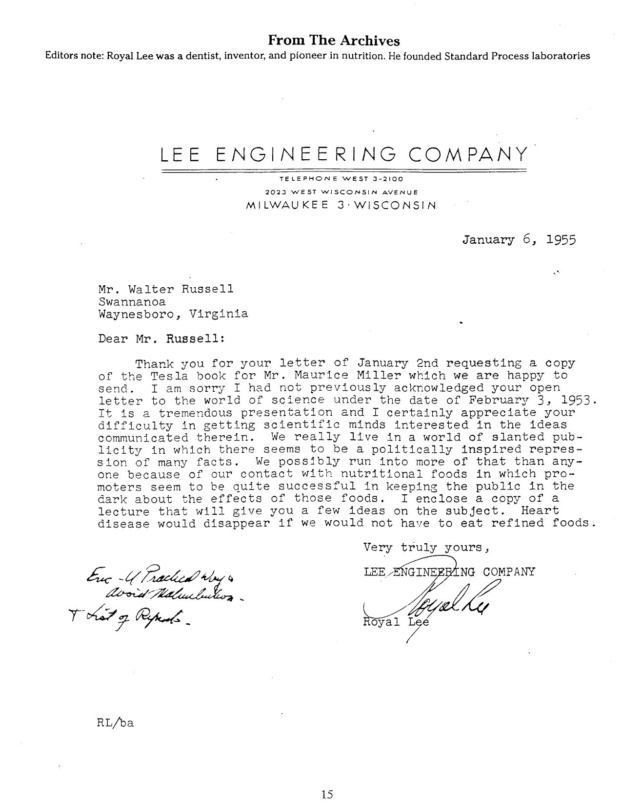
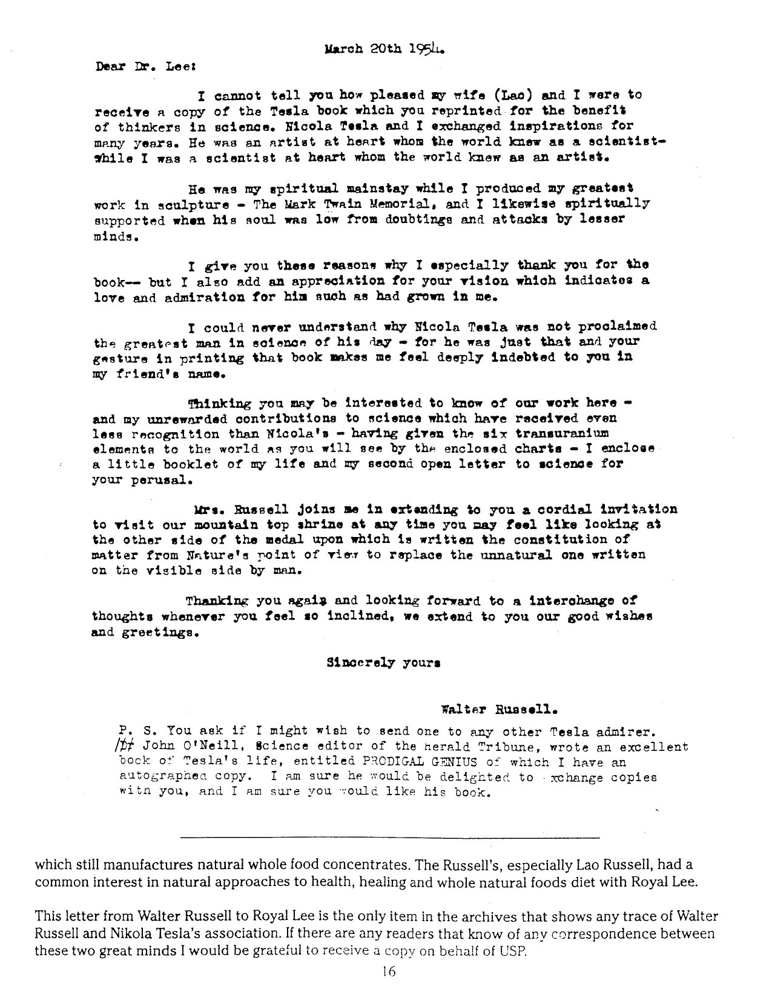
{kind=link}
Editorial notes
- Chronology: the printed order is reversed. Russell's letter (Mar 20, 1954) thanks Lee for the reprinted Tesla book. Lee's letter (Jan 6, 1955) answers a later Russell letter of Jan 2 [1955], which requested a further copy of the Tesla book for a Mr. Maurice Miller. The "Tesla book" Lee reprinted is very likely John J. O'Neill's Prodigal Genius (mentioned in Russell's P.S.) or a Tesla lecture reprint. The letters do not name the reprint's title.
- Bearing on the "Tesla told Russell to bury his knowledge for 1,000 years" folklore: these letters neither state nor allude to any such instruction. Russell himself characterizes the relationship as mutual inspiration and emotional support ("Nicola Tesla and I exchanged inspirations for many years", "He was my spiritual mainstay… I likewise spiritually supported when his soul was low"). No mention of burying, sealing, or withholding knowledge appears anywhere. Moreover, the 1996 USP editor states flatly that this letter "is the only item in the archives that shows any trace of Walter Russell and Nikola Tesla's association". He also appeals to readers for any actual correspondence. That is, as of 1996 the USP archive held no documentary support for the folklore quote. The letters therefore undercut the legend's documentary basis. They prove acquaintance, but the famous "bury it" line rests on no archived Tesla document. Notably, in the coil correspondence three years later (journal p. 21), Russell argues the opposite of secrecy: "the great secrecy which we thought necessary was not at all necessar[y]".
- Russell's claim of "having given the six transuranium elements to the world" refers to his 1926 periodic-chart predictions. His spelling "Nicola" (for Nikola) is as typed.
- The illegible handwritten note on Lee's letter appears to list enclosures (a malnutrition pamphlet and a reprint list), consistent with "I enclose a copy of a lecture".
2. Dube proposes the test protocol
The control is stated in advance: equal core length and cross section, and the identical amount of wire of the same size. Relative pulling capability is the agreed criterion.
{kind=link}
CABLE ADDRESS "ALCOVA"
ALCO VALVE COMPANY TELEPHONE · PARKVIEW 5-2460 865 KINGSLAND AVENUE Saint Louis 5, Missouri
August 25, 1958
Dr. Walter Russell, University of Science and Philosophy, Swannanoa, Waynesboro, Virginia
Dear Dr. Russell:
The conventional method of constructing a solenoid valve is illus- trated in Fig. 31, page 64 of our Handbook, a copy of which is enclosed. The armature moves up and down in a cylindrical cavity in the center of the coil winding. Since the Russell Coil has no through center cavity, I do not see how we can directly compare its efficiency to our standard units. As an alternate we suggest making two pull test fixtures as illustrated in Figs. 1 and 3.
Referring to Fig. 1, Parts (1) and (2) are identical halves of the iron core, shaped as suggested in your description dated August 8th. The cross sectional area of the iron in any section perpendicular to the axis will be consistent except at transition (or step) points. Parts (6) and (11) are flat iron straps to "conduct the energy" to an armature assembly. Bolt (3) holds the straps and iron core halves together and is made of non-magnetic material. Part (7) is a magnetic top plug which is bolted to the other end of strap (6). Enclosing tube (8), which is made of non-magnetic material and is pre-welded or brazed to the top plug, serves as a guide for the magnetic armature (9) that is free to slide vertically in the tube. Part (10) is a cylindrical, magnetic bushing that fits on the out- side of the enclosing tube and on the inside of a hole in magnetic strap (11). The bushing provides an enlarged flow path for the energy between the strap (11) and the armature (9), thus tending to reduce the flow resistance through the "non-conducting" tube (8) and the small air gap between the tube (8) and the armature (9). Sleeve (4) is an insulating tube on which to wind the copper wire (5). A separate sleeve will be used for each section of the winding.
[page break — journal p. 84, letterhead continuation:]
Dr. Walter Russell, -2- August 25th Univ. of Science and 1958 Philosophy
Fig. 2 indicates the method of electrically connecting the various winding sections, as we understand it. For simplicity only one turn of wire is indicated in each section, although actually about 500 turns per section will be used. We have used particular care in diagraming the windings in Fig. 2 so you can check the direction of the turns and the method of interconnecting the sections.
Fig. 3 illustrates the same test fixture but with one of our stand- ard solenoid coils and a straight iron core substituted for the Russell Units. This core will have the same length and cross sec- tion area as the Russell core, and the two coils will be wound with the identical amount of wire of the same size.
The tests will be conducted as follows. With the armature (9) in place against the top plug (7) the electrical voltage supplied to the coil windings will be adjusted until the unit is drawing 5 watts of electrical power. Increasing downward force will then be applied to the armature. The amount of force required to pull the armature free from the top plug will be a measure of the capability of the unit. The relative pulling capability of the two units should deter- mine the merits of the Russell Theory.
Please let me know if you are in accord with this outline so we may proceed with the actual fabrication of the parts.
Yours very truly,
ALCO VALVE COMPANY
[signature: John E. Dube]
John E. Dube President
JED:ER Encl.
CC: Mr. Russell Maguire
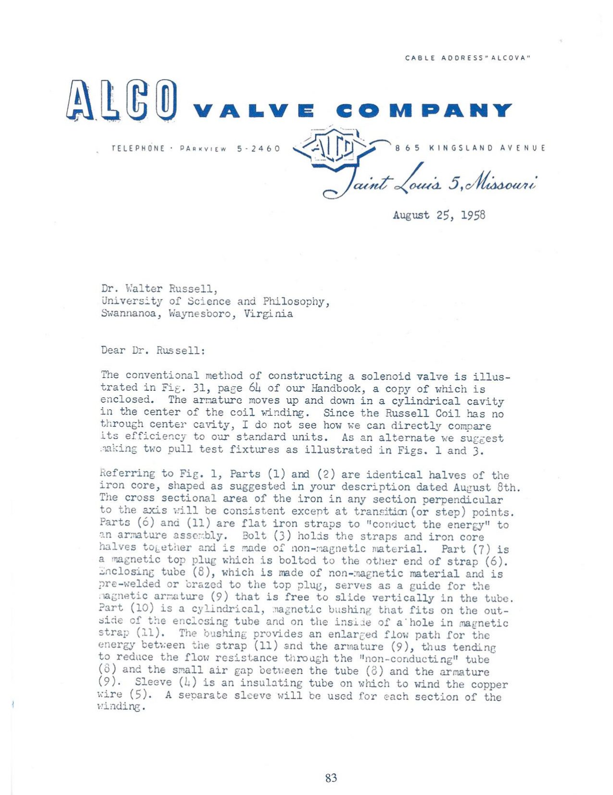
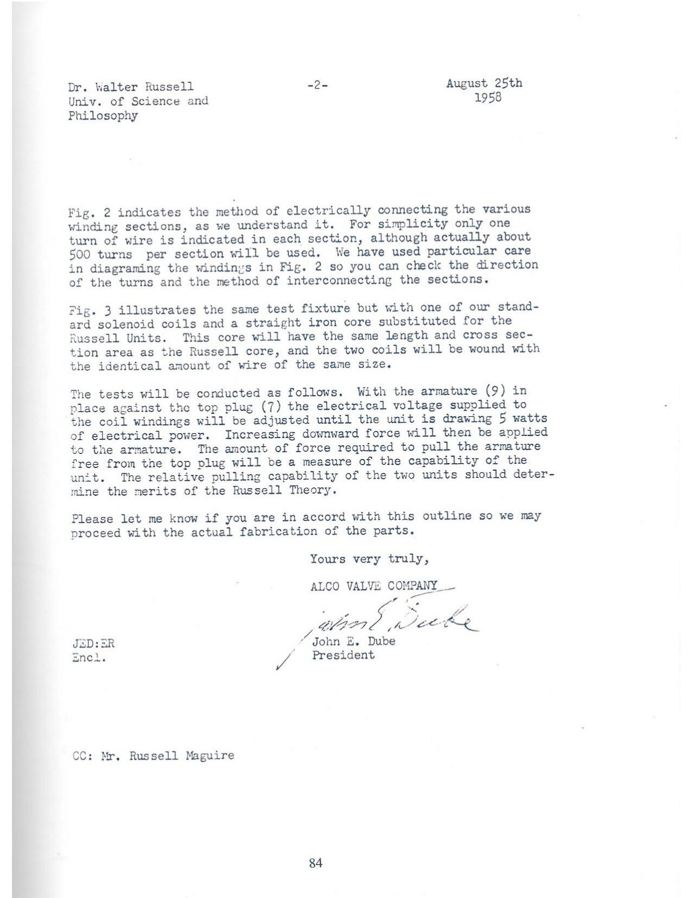
{kind=link}
Editorial notes
- This letter is a direct reply to Walter Russell's coil "description dated August 8th" (1958). This issue does not reprint that description.
- The test protocol described here is a constant 5-watt input with a measured breakaway pull force. Its results appear in Fig. 4 (journal p. 92). Fig. 4, though, records the run conditions as 24 VDC / 4.4 watts.
- Figs. 1, 2 and 3, which the letter references, appear on journal pp. 88, 89 and 90 respectively.
- This letter spells "Maguire" thus. The Russells' Aug 30 reply spells it "Maquire."
3. The Russells approve the plan
Walter and Lao Russell accept the protocol as outlined and ask for one design change, a through-hole for later transmutation work.
{kind=link}
Note: this letter appears in the magazine as re-set type (serif font), not as a facsimile of the original typescript.
August 30th, 1958,
Mr. John Dube, CC, Mr. Russell Maquire. Alco Valve Co. St. Louis, Mo.
Dear Mr. Dube;
We thank you for your good letter and drawings. The receipt of them made us very happy to feel your thinking, and your interest going into them, and that they are a step in the direction of our objective. We feel the necesity [sic] of sending you supplementary data, however, and more complete drawings for a complete test which these drawings lack. The new drawings - and their test counterparts, can be followed exactly and they will be found to work. Explanations can come afterwards as to theory, but with these drawings will come a brief explanation as to WHY they are incomplete, and what there is in them which is not in accord with Nature's processes. We are in search of maximum POWER - but that is not enough. We want to control that power with the precision which a piano tuner controls his pitch.
Fig. 1 properly interprets the coil but Nature's secret of multiplying power in her step-up process of multiplying low potential gases into high potential solids is absent, and that is our objective. Man has never yet been able to imitate Nature's miracle of power building by putting the breaks [sic] upon high speed and multiple frequencies which she constantly performs in order to transform an invisible, static, vacuous universe of indescribable cold, into a visible, dense, dynamic universe which climaxes in the incandescense [sic] of incalculably not [sic — likely "hot"], incandescent suns.
Nature multiplies silent and inaudible lightwaves into visible and audible ones by reducing a 186,400 miles per second, into 1100 feet per second sound waves. Nature also multiplies the invisible light (which we see as darkness because it is beyond human range) to incandescent suns by slowing a seven hundred trillion frequencies per second to one in eleven years and more. There is no other way for man to multiply light and power but that one way, but he has not yet fathomed Nature's secret. The Russell coil will conquer that secret when fully understood and applied, and that is why these tests should be right.
It would not be a waste of money, or time, to carry out your plan just as outlined, so long as not too much expectation is looked for. It could be a revealing step in the right direction, especially if the two vacuum tubes we designed were made use of to visualize what happens in them which would be lacking in this test. The one thing which is right about it is its complete cathode, but the essential thing which is wrong with it is that it is only half a wave instead of a whole.
[page break — journal p. 86:]
-2- John Dube.
I am worried about the armatures and strap pieces No's 6 and 11. These strap pieces void some of the power which the coils have generated, and all armatures in Nature are located between the pole pairs at wave amplitude- and there are no such anode pairs in this design. I will comment on that fact in our new letter for I am afraid that engineers have not recognized that extensions - such as those straps, - cannot conduct anywhere near the potential of energy which their solenoids generate. It may be that you can avoid this fault in many of Alco products by comprehending the principle involved in it.
Your letter states that the straps were necessary because the Russell coil has "no through center cavity." It can have one, however, if the purpose calls for one, such as transmutation. I had a hole all through my homely self-made coils through which I thrust my small preheated quarts [sic — quartz] tube when I transmuted a few drops of water into seventeen different patterns. The Russell coil is built upon Nature's tornado principle of power multiplication, and every tornado has an ever narrowing hole in it. I will provide for that hole in the next drawing and compensate for it by adding steel where marked X in Fig. 1, and make the bolt into a tube.
With our warm personal regards we are
Sincerely yours,
Walter and Leo Russell, [sic — Lao]
UNIVERSITY OF SCIENCE
AND PHILOSOPHY.
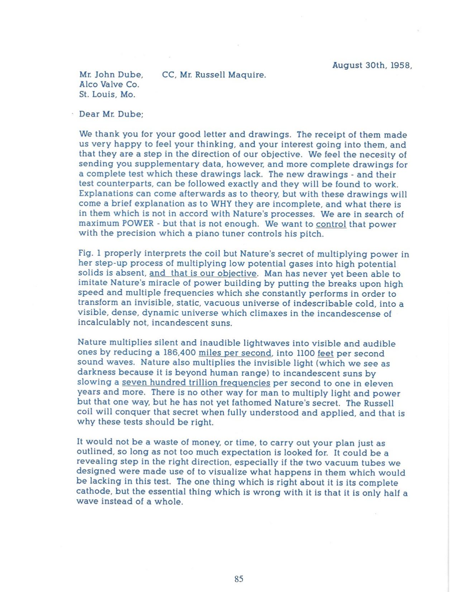
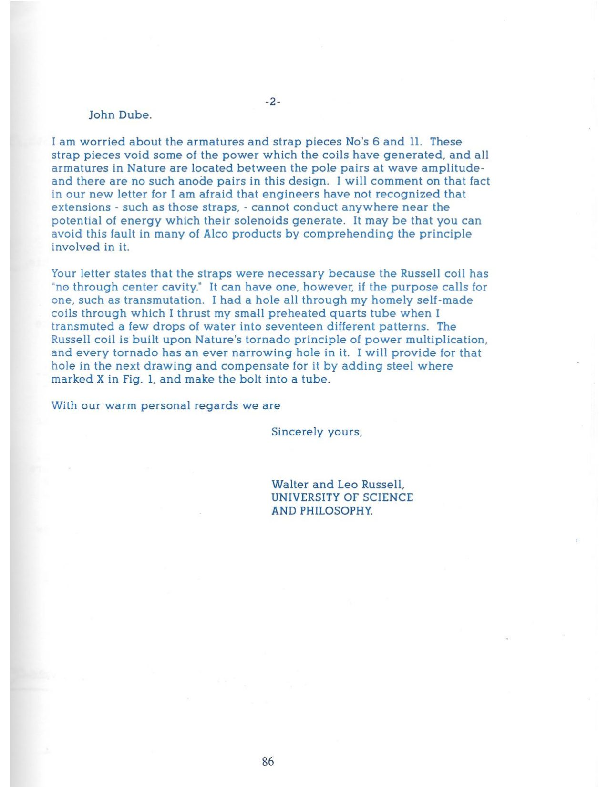
{kind=link}
Editorial notes
- This letter replies to Dube's letter of Aug 25, 1958 (journal pp. 83–84). "No's 6 and 11" refer to the flat iron straps in Dube's Fig. 1/Fig. 3 fixtures.
- Russell's claim that he transmuted "a few drops of water into seventeen different patterns" with a quartz tube through the coil bore is his recurring account of his own earlier experiments.
- "anode pairs" (second paragraph, p. 86) appears as printed. Given the preceding sentence, it may be a typesetting error for "pole pairs."
- Several evident 1997 re-typesetting errors are preserved verbatim and tagged [sic]: "necesity," "breaks" (brakes), "incandescense," "not" (hot), "quarts" (quartz), "Leo" (Lao).
4. The prediction: a 40 to 60 percent advantage
Russell commits a number to paper before the coils exist: a 40 to 60 percent increase in "gravity power" for his coils over the conventional pair.
{kind=link}
Note: the letter is reproduced in facsimile — University letterhead with a typed body and a joint autograph signature. Words underlined in the original typescript appear underlined here.
UNIVERSITY OF SCIENCE AND PHILOSOPHY FORMERLY THE WALTER RUSSELL FOUNDATION SWANNANOA, WAYNESBORO, VIRGINIA
Founded by Walter and Lao Russell to give new knowledge of the SCIENCE OF MAN through Uni- versal Law, Natural Science and Living Philosophy.
"In vain we build the city if we do not first build the Man" — Markham
[left margin of letterhead:] President: LAO RUSSELL Secretary: DR. WALTER RUSSELL Directors: LAO RUSSELL, WALTER RUSSELL, ARTHUR J. JONES, JOHN LOMBARDI, EMELIA LOMBARDI, DR. H. W. LAVENDER, CHARLES L. BANISTER Counselors: ROBERT ASH, CHARLES H. BURTON, CLARK L. JORDAN, JOHN LOMBARDI
October 5th,/58.
Mr. John E. Dube, CC: Mr. Russell Maguire, Alco Valve Co. Greenwich. St. Louis, Mo. Connecticut.
Dear Mr. Dube;
Your letter of the 3rd inst. lifted us up into the high heavens of happiness. Your revision, made necessary by small scale, is perfect. We did not want the hole for this test anyhow but will need it when we begin to tear the elements apart with fifty to a hundred pound coils to transmute them.
We will then make revisions of the design which will make the central solenoids smaller and grade them up in size because less turns on large diameters will require less space. This will keep the outside sphere shape as is and would help make the inner cathode hole more spherical. It is not worth while doing now while your tools are set as they are, but it would be worth while doing when you have made this test and find it works, just to find out in small scale how much extra percentage of lifting power can be added to the poles.
My intuitive mathematics are often very near being right. Applying that method to the design now under way I venture to predict a 40% to 60% increase in gravity power of the Russell coils over the pair of conventional ones, as you are now making them. By changing the middle solenoid diameters for refinement, as above suggested, it should add between 5% and 10%. It will be interesting to see how near our prophesy [sic] comes true.
Again expressing our happiness for having been able to have you so clearly understand the underlying principles which must be comformed [sic] to in order to mechanically interpret Nature's process of power multiplication, and thanking you for your patient follow through with us, we are,
Sincerely yours
[signature: Walter & Lao Russell]
Walter and Lao Russell.
[letterhead footer:] "THE SCIENCE OF MAN IS THE MOST IMPORTANT, AND LEAST KNOWN, OF ALL THE SCIENCES" — Alexis Carrel
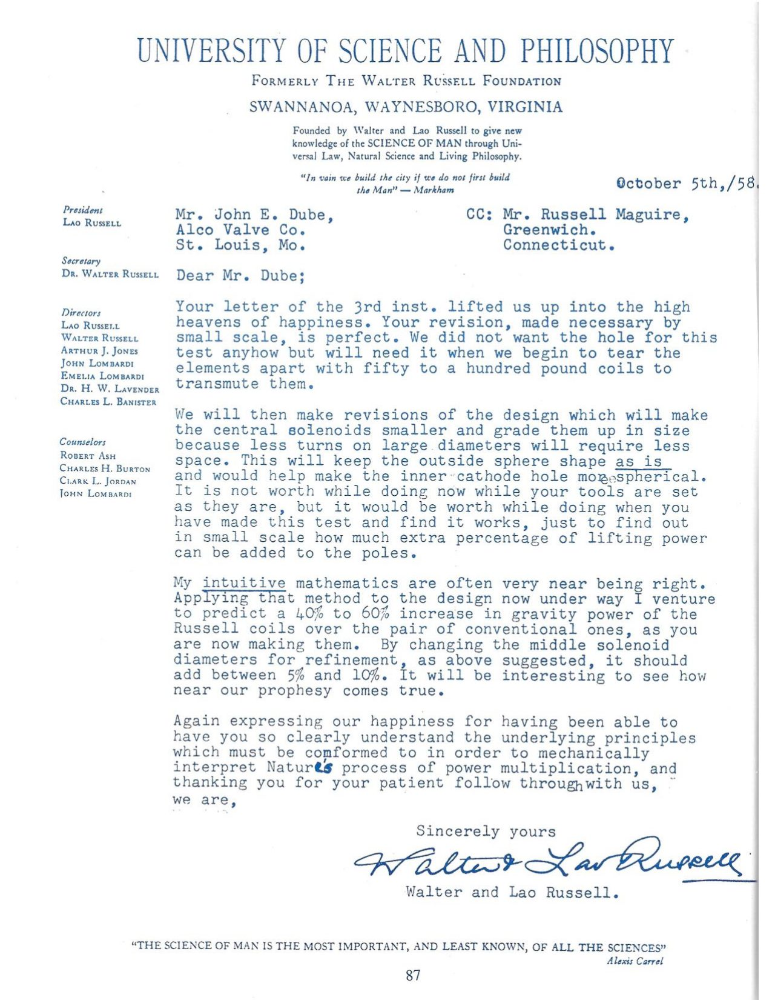
Editorial notes
- This letter replies to a Dube letter "of the 3rd inst." (October 3, 1958), which this issue does not reprint. That Dube letter evidently transmitted the revised test-unit drawings LO 8308-11 / LO 8308-12 dated Oct 2, 1958 (journal pp. 93–94). Those drawings delete the through-hole that Russell requested Aug 30.
- This puts Russell's quantitative prediction on record before the test: the Russell coils were to out-pull the conventional pair by 40–60%. The measured result (Fig. 4, journal p. 92, dated Nov 1958) shows that the step-diameter (Russell) coils pull less than the standard coils at every gap. This is the "Dube verdict."
- "comformed" and "prophesy" are preserved as in the facsimile typescript. In "patient follow through with us", the typescript drops the final h of "through" to subscript and runs it into "with" with no space ("througₕwith" — a slipped key). The transcript normalizes the spacing.
5. Dube reports the result
One sentence carries the verdict. Dube also returned both pairs of test coils so that Russell could check the measurements himself.
{kind=link}
Conventions: the transcription is verbatim. [illegible] = unreadable. [word?] = uncertain reading.
ALCO VALVE COMPANY
ST. LOUIS, MO.
November 21, 1958
JOHN E. DUBE PRESIDENT
Dr. Walter Russell, University of Science and Philosophy, Swannanoa, Waynesboro, Virginia
Dear Dr. Russell:
Attached find report of comparison tests between a Russell and an orthodox solenoid coil. You will note that we were unable to detect any advantage for the Russell coil.
Under separate cover we are sending you the two pairs of test coils to give you a personal opportunity to check our results.
Please let us know if you want further information concern- ing this matter.
Yours very truly,
[signature: John E. Dube] John E. Dube
JED:ER Encl.
CC: Mr. Russell Maguire
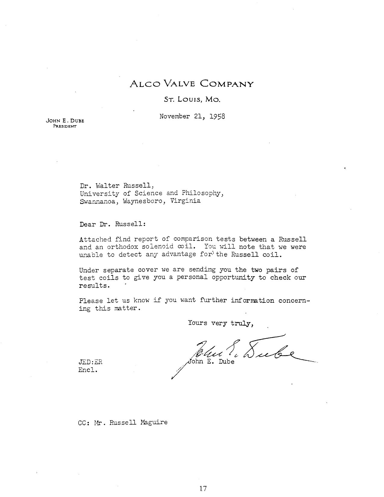
Editorial notes
- This is the cover letter for the "Report on Evaluation of Russell Coil" printed on journal pp. 18–19 (see v4n3_p18_evaluation_report.md).
- One sentence delivers the verdict: "we were unable to detect any advantage for the Russell coil." Dube also returned the physical test coils to Russell so that Russell could replicate the measurements himself. This was a notably fair-minded gesture.
- The CC to Russell Maguire (Greenwich, Conn.) identifies the financier/backer of the test program. Russell's Nov. 24, 1958 reply (journal pp. 20–22) is addressed to Maguire with a copy to Dube. This confirms Maguire as the sponsor who was "withdrawing" after the negative result.
6. Report on Evaluation of Russell Coil
The Alco engineering report: design, two tests, results, and three conclusions. It discloses the 4 percent resistance deviation that favors the Russell coil.
{kind=link}
Conventions: the transcription is verbatim. [illegible] = unreadable. [word?] = uncertain reading. The left margin of the scan is cropped, which truncates the section labels. Square brackets supply the obvious reconstructions, e.g. [OBJ]ECT.
Journal p. 18 (PDF 21)
REPORT ON EVALUATION OF RUSSELL COIL
[OBJ]ECT OF PROGRAM:
To compare the pulling power of the Russell type solenoid coil with conventional coils.
[DE]SIGN OF COILS:
Two Russell coils were constructed in accord with the layout, Drawing L08308-11 and asso- ciated detail parts drawings. Two conventional coils were constructed in accord with Drawing L08308-12 and associated detail parts drawings. Prints of all above drawings are attached. The sizes of the various coil windings were calcu- lated to use the same total length of copper wire per unit. The sum of the resistances of the segments of the Russell coil actually came out to be 4% less than the conventional coil. This small difference is less than the deviation we allow in production of conventional coils so is considered acceptable. The difference favors the Russell coil, so is not detrimental in this evaluation.
[DE]SCRIPTION OF [TE]ST #1:
Two completed conventional solenoids were mounted in line axially with a one-half inch gap between the adjacent core buttons. The windings were wired as indicated in Fig. 1 and 24 volts direct current power was applied to the leads. Iron filings were dropped into the 1/2 inch gap between buttons until the solenoids were apparently sup- porting the maximum amount of filings. This amount was weighed. The test was repeated using Russell coils wired as shown in Fig. 2. There was no apparent difference in the supporting power of the Russell and conventional coils. However the test was considered inconclusive because the operator could vary the supporting power by packing the filings around the buttons, leading to the suspicion that the method of application of the filing might make more difference in the test results than the difference between the coils being compared. This form of testing was abandoned in favor of the fol- lowing test.
Journal p. 19 (PDF 22)
[DE]SCRIPTION OF [TE]ST #2:
Two conventional coils were wired as indicated in Fig. 1 and mounted in the test fixture shown in Fig. 3. With 24 volts applied to the leads the pull necessary to separate the two coils was measured by means of a sensitive force scale. The test was repeated a number of times with dif- ferent thicknesses of plastic spacers creating a gap between the buttons. The same procedure was followed with the Russell solenoid wired as shown in Fig. 2. All tests were repeated a number of times with very consistent results. With no gap (spacers removed) the conventional solenoid drew 4.4 watts and the Russell coil 4.6 watts.
[RE]SULTS:
The attached Fig. 4 is a plot of the pulling power of each type coil against the gap. The conventional coil has 5 to 10% more pulling power throughout the range of gaps tested.
[CO]NCLUSIONS:
(1) The slight inferiority of pulling power of the
Russell solenoid can be accounted for by conventional
theory. Since both type coils had the same length
of copper wire in the windings, and since the average
diameter of the Russell coil was slightly larger (due
to the irregular core shape and loss of space between
the segments of the winding) the Russell coil has
slightly fewer turns, and this generates fewer
ampere-turns of magnetic power, when operated at the
same amperage and wattage as conventional designs.
(2) Since the Russell design inherently loses winding
space it would appear to be inferior rather than
superior to conventional design.
(3) Even if some new winding technique were developed
to overcome the space loss in the Russell coil, it
would appear that it would equal but not exceed
conventional designs.
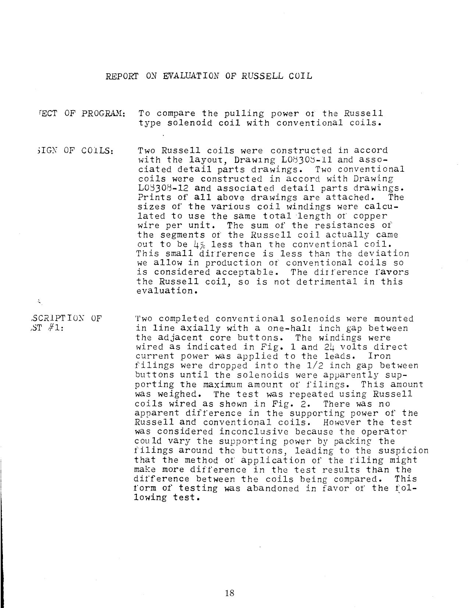
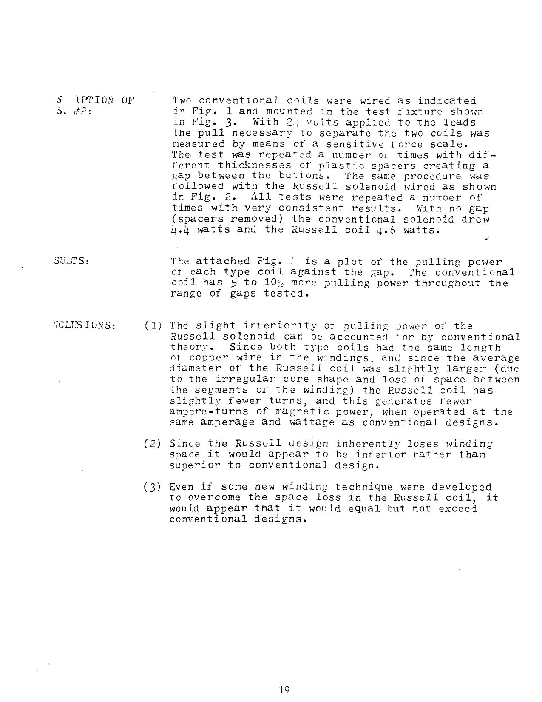
{kind=link}
Editorial notes
- Referenced but not reprinted: the report cites wiring diagrams Figs. 1–2, test fixture Fig. 3, and the pulling-power-vs-gap plot Fig. 4. It also cites layout drawings L08308-11 (Russell coil) / L08308-12 (conventional coil) with "associated detail parts drawings." The report says all of these are attached. None of these figures or drawings appear anywhere in this Fulcrum issue. We checked through PDF page 30 (journal p. 27). After journal p. 23 the issue switches to an unrelated 1923 "Russell Rent Mutualization Plan" reprint. Russell's P.S. of Nov. 24, 1958 asked Dube to keep copies and return the originals, so the drawings presumably went back to Swannanoa.
- Fig. 4 recovered in V5N1: Fulcrum Vol. 5, No. 1 reprints the pull-test graph (dated ~Nov 17, 1958, 24 VDC / 4.4 W), along with drawings LO 8308-11/-12 and detail parts LO 8308-101..-109 and -120..-122 (see transcripts/INDEX_v5n1.md). A calibrated read of that graph (±0.05 lb, gridline-calibrated; see schematics/README_schematics.md) gives four points per curve at gaps 0/.014/.028/.040 in: standard 5.09/2.62/1.72/1.32 lb, step 4.80/2.38/1.52/1.21 lb. The conventional-coil advantage is 6% at contact, 10% and 13% at the middle gaps, and 9% at .040 in. This matches the report's stated "5 to 10% more pulling power throughout the range of gaps tested" within reading uncertainty. An earlier approximate read of the graph endpoints (~2.1 vs ~1.4 lb, ≈50% spread) was a misread, and this note supersedes it. A power cross-check corroborates the data: 24²/131 Ω = 4.40 W and 24²/126 Ω = 4.57 W, which equal the report's 4.4 W and 4.6 W figures.
- Methodological quality: for 1958 industrial practice this is a clean controlled comparison. The units have equal copper length. The resistances match within production tolerance, and the 4% deviation favors the Russell coil — i.e., it biases the test toward the claim under test. The staff candidly flagged the operator-dependence of the abandoned first protocol. They repeated the trials and swept the gap. The confound they identify in Conclusion (1) (larger mean winding diameter → fewer turns → fewer ampere-turns) is textbook solenoid theory.
- Bottom line: the conventional coil is 5–10% stronger across all gaps. The Russell coil drew slightly more power at zero gap (4.6 W vs 4.4 W). That is, the Russell coil is worse on both counts.
7. The Russells concede
Three pages to the funder, with a copy to Dube. The concession "as a fact of law" stands beside the retreat: the martyrs, the moved goalposts, and the missile-defense claim.
{kind=link}
Conventions: the transcription is verbatim. [illegible] = unreadable. [word?] = uncertain reading. Words underlined in the original appear underlined here. Typographical errors in the original are preserved, with [sic] added where they can confuse. Square brackets restore characters lost at the cropped/faded page edge.
Page 1 (journal p. 20 / PDF 23)
Nov. 24th, 1958.
Mr. Russell Maguire, Cc. Mr. John E. Dube, Greenwich, Conn. St. Louis, Mo.
Dear Russell;
First let us thank you sincerely for making this second step toward the accomplishment of our epochal goal - the control of matter - and to thank Mr. Dube for his meticulous care and patience in working out the mechanics and mathematics of our coil unit in so skillful and masterful a manner. Having done this let us now examine the result of it from both your point of view and ours.
To you the resultant test was a failure and you undoubtedly judged it a failure because it did not do what we said it would do. For that reason we feel that you are fully justified in withdrawing from it. From our point of view it but informs us of one seemingly mistaken step which every greatgiver of idea to the world encounters during the mechanical unfolding of his idea. It has made us fully aware of what that mistake is, but we do not see failure in it as you probably do. Alexander Graham Bell encountered many such seeming mistakes which his backers and friends considered dead ends, during his struggle with the telephone. He was reduced to apple and cheese diet for long periods because of them. He won out, however, for within him was a light of knowing which the world did not recognize. Charles Goodyear gave rubber to the world against ten times the resistance by a world which named him a fool, a cheat and a knave. Yet each of these two "fools" transformed the world communications systems in their two separate ways.
Our mistake was in making an issue of an effect which in no way affected our objective. We mistakenly based that test upon our assumption that the Russells' coil would greatly increase the magnetic field potential over that of the traditional coil, because of the back-wiring, and one-way wiring practice now in use -- while our real objective is to produce a new wiring system in a coil whichwould [sic] control the construction of matter by dividing the static white light of space into pairs of spectrum mates, as each wave thus divide[s?] light to integrate its pairs.
Our assumption of that greater power was purely theoretical and unimportant. We can now see by this test that any two wire coils, wound in any way whatsoever, will give equal resultant field potential, providing that the various dimensions of each coil are equal. We can readily see that now, and can admit it as a fact of law, as you have proved it to be.
Page 2 (journal p. 21 / PDF 24)
-2-
The fact that back-wiring does not subtract from power is a lesson which will enable us to simplify our coil by not having to make it in sections, but as long as the one-way wiring system is used in this two-way universe of divided mate-pairs, science will be limited to a synthesis of existent matter. It will never be able to transmute one element into another or to create new elements. To create and control matter, it is necessary that the two-way wave principle which divides light into spectrum pairs, be employed, and that can be done only by obeying Nature's laws of construction. Present day science can neither obey or command these laws,for [sic] the construction of matter is admittedly a blank slate.
YOU know what our objective is, and you know what world-control over its gases and metals would mean. We want to give the secret of that power to a source of GOOD to conquer evil. We want the world's needs for power and for the creation of fuels, metals andwater [sic] to be under the control of men who have knowledge, and of a character which will not misuse them, and not let the world be subjected to shortages of essential needs and consequent suffering, because of ignorance of Nature's processes of construction and their control.
Our coil is the most basic thing in science because it contains within it the entire principle which emulates the wave in every respect, and the wave is Nature's ONE UNIT which creates all things.
This test, plus our wrong assumption about back-wiring, has taught us that the great secrecy which we thought necessary was not at all necessar[y] for we could actually give this coil to anyone and tell him that it held the world's greatest secret and he would not know how to use it. It would be as safe as pointing to the sun and telling him the same thing - and he still could not use it. In fact we doubt if it is patentable because of its mechanical similarity. After all a coil is a tool, like a lever. A lever cannot be patented but a typewriter, operated by levers can be. That which we can patent is a mechanical system which can do what no other mechanical system can do.
Perhaps the next step is to reconstruct the mechanical system which one of us produced long ago in Westinghouse Laboratories, which made it possible to change six cubic centimeters of water into seventeen other "substances". In doing so water was assumed to be one of the toneSof [sic] the nine octave harp which the universe is. A universal "tuning fork" was produced which changed the pressure dimensions of one tone into another, as a piano tuner, violinist or harpist do to their tones.
That knowledge of principle we alone have. We alone can give that tuning fork ( a differently powered one for each octave) to the world. This gift would be useless to anyone who has not the vast knowledge of basic principle which lies behind its usage, such as the geometry of space which measures and controls the dimensions of wave fields - the mechanics arising from that knowledge which causes compression-expansion sequences of the universal heartbeat - the power to transmute existing metals or create new ones - the "echo" or radar principle which repeats every thing which happens everywhere to every other where - the power-projection principle of Nature which will rid science of its costly and primitive power lines as its present system of power-transmission - and, most important of all, will immunize any nation from being hurt by any approach- ing missile, bomb, submarine, warship or plane.
Page 3 (journal p. 22 / PDF 25)
-3-
CONCLUSION.
As soon as it is humanly possible we will take another step to demonstrate what is herein written, but the time limit which we can give to this is small because of our university activities, and our financial power is limited to our own earnings, but, despit[e] all handicaps, we will demonstrate to you that this test is in no way a finality. It has been an easily surmountable hurdle into a strata of greater light. It has helped to simplify our procedure by ridding it of the one thing about it which was theroetical [sic], and proved to us that the end result is where we should look for patent protection, and not in any mechanical tool used to attain that resul[t]
For these reasons we ask you to hold any opinions you have formed in suspension until we find ourselves able to open another door in the long corridors which every creator of new idea must painfully find his way - and surmount each unseen obstacle as it rises before him to try to block his way.
Again thanking you for your valued help to us, and to the world, and assuring you of our warm personal regards, we are
Sincerely yours,
[signature: Walter and Lao Russell] Walter and Lao Russell.
P. S. Please ask Mr. Dube to return our original papers for posterity, and take copies in place of them for his records.
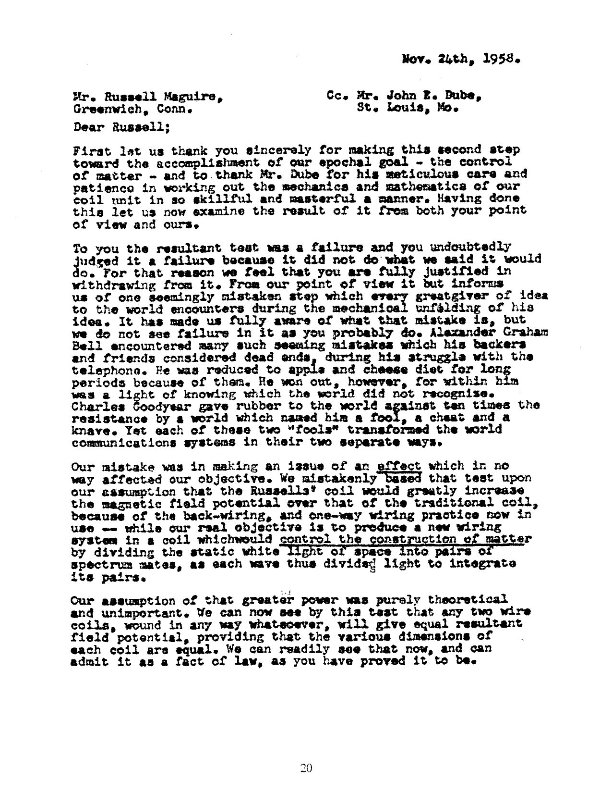
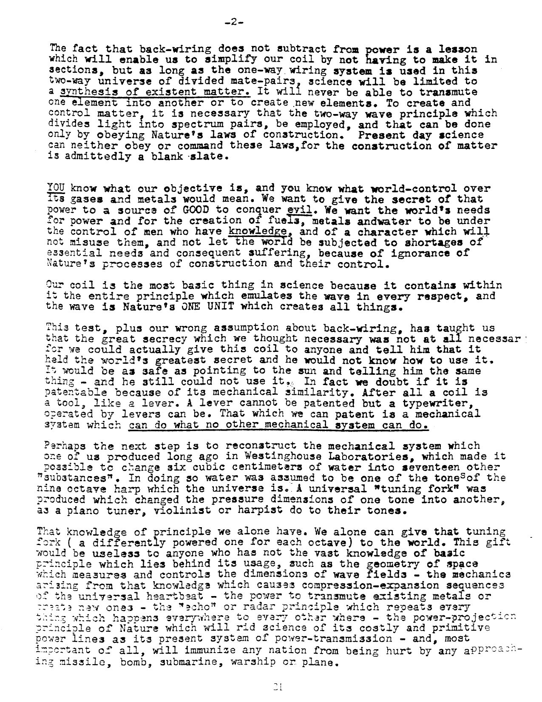
{kind=link}
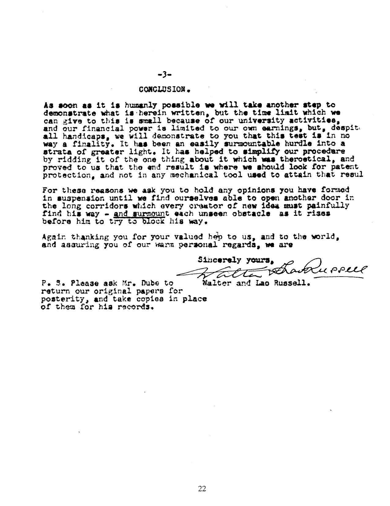
{kind=link}
Editorial notes
- The key concession (p. 1, ¶4–5): the Russells accept the null result unreservedly — "any two wire coils, wound in any way whatsoever, will give equal resultant field potential, providing that the various dimensions of each coil are equal. We can readily see that now, and can admit it as a fact of law, as you have proved it to be." The 1996 editor quotes this sentence on journal p. 23.
- The reframe: the letter concedes the effect (greater power). It then pivots to claim that the coil's real purpose was always to "control the construction of matter" — transmutation, not output — and it reclassifies the power claim as "purely theoretical and unimportant." The comparisons to Bell and Goodyear, the geopolitical stakes (GOOD vs evil, missile immunity), and the Westinghouse water-transmutation story all serve this pivot.
- Secrecy reversal: the test convinced them that "the great secrecy which we thought necessary was not at all necessar[y]". This is directly relevant to community folklore about Russell's secret knowledge. Here Russell himself says they could give the coil to anyone safely.
- "whichwould", "andwater", "laws,for", "theroetical", "toneSof" are run-together or slipped-key typos preserved as typed in the original. "greatgiver" is one word in the original. The extra space in "obstacle as" (p. 3) reflects the typing.
- The letter treats Maguire's withdrawal as an accomplished fact ("you are fully justified in withdrawing from it"). No further Alco/Maguire test round is known from this issue.
8. The 1996 editor's note
USP's editor states why he printed the file, asks that the concession appear in future editions of the Home Study Course, and reports a second negative result on the Unit 11 lens bank.
{kind=link}
Conventions: the transcription is verbatim. The two-column page is transcribed in reading order. [illegible] = unreadable. [word?] = uncertain reading. Titles italicized in the original (Home Study Course, HSC, Fulcrum) are rendered in italics. Words underlined in the original appear underlined here.
Editor's note: I feel it is imperative to publish the test results that Walter Russell received after testing the viability of his contention in the Home Study Course unit 10 and in other writings that spiral wound coils produce a greater current flow and thus greater power. I know for a fact that many people have spent countless hours in attempting to construct spiral wound coils in hopes of getting greater power out of them as the HSC claims. It is my desire that the results of the test data, how the coils were constructed and tested, and Walter Russells response will save researchers much time in their attempts to bring to fruition any possible fruit from the concept. I am certain that both Walter and Lao Russell would want this information available to their students at this point in time.
Apparently the tests revealed and Walter Russell agreed that, "any two wire coils wound in any way whatsoever, will give equal resultant field potential, providing that the various dimensions of each coil are equal". Since this appears to be the fact I believe that this should be noted in future additons [sic] of the HSC along with a commentary about what he felt still might be viable in the concept of spiral windings for new technology. Exactly what he still felt was viable as stated in his letter of Nov. 24th. 1958 is unclear to me.
On page two of his letter fourth paragraph in the third sentence, I believe the word similarity was meant to be simplicity.
It appears that Russell continued to think that spiral coils were essential for transmutation as he says that science, "will never be able to transmute one element into another or to create new elements".... "as long as the one way wiring system is used in this two way universe.....". Yet, Russell transmuted matter at the Westinghouse Lamp Labs in 1927 using straight wound coils and the Russell Science Research team did the same in the 1990s.
It appears to me that the concept of opening and closing spirals has importance to technology and Russell hints that he feels it is important for transmutation and in this area I feel he was on the right track but not in relation to electrical coil windings as stated in the HSC. Spirals are possibly important in fluid motions of materials to separate out elements and maybe in some ways that he did not experiment with in the transmutations of gases in spiral wound tubes. Bottom line is the tests he had done proved that spiral wound coils do not produce greater power than straight wound coils and the publication of this data helps set the record straight and may assist future researchers.
There is an additional item in regards to the Russell's claims to produce greater power with their concepts that I feel may help researchers that I feel impelled to bring to your attention. In Unit 11 of the HSC the claim is made that an octave system of lenses will produce greater heat and power than is put in it. While I have not seen any test results that Walter Russell had done with this idea I know someone who claims to have constructed such a lens system as detailed in the HSC and it was found to not produce any over unity of heat or light. In addition the placement of the lenses as detailed in the course will not allow the focal points to fall where the Russell's thought they would as the lens makers pointed out to my friend. But, either way they were placed, as the Russells showed it or as it had to be to focus as they wanted it to focus, this individual found that there was no over unity production of heat or light. I will attempt to get photos that I have seen of the lens system and data to publish about this testing in future issues.
All a lens does is concentrate the given heat/light to a focal point. Any system of lens can do no more than a single lens and a single lens in fact is a series of lenses within lenses. A lens or lens series will focus what is spread out over a wider area into a smaller area, but it will not create over unity or something for nothing.
If any reader has done any experimentation with either the spiral coils or octave wave banks of lenses that they feel does substantiate claims of over unity, I and USP will be very grateful to investigate it.
It appears that the domain where Walter Russell was most fruitful in regards to technological applications for his concepts was in the area of transmutation. He did this at Westinghouse in 1927 and it was verified again in this decade. I have had converstations [sic] with a scientist who worked with Russell in the 1950's as his assistant at Swannanoa when they tried to reduplicate the 1927 work and failed at that time to do it. Yet, his concepts explain all the phenomena that scientists are observing of transmutations in cold fusion research that they are mystified about.
There may yet be some manner in which his concepts for electrical power and solar energy production may prove of value. It is with this hope for humanity that I have included his own test results and correspondence in this edition of Fulcrum.
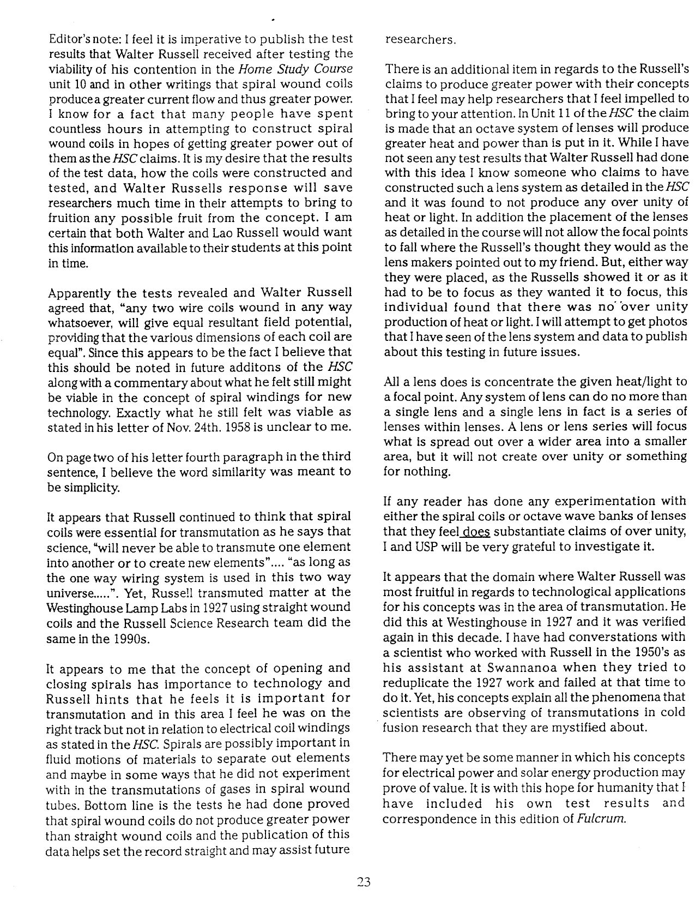
Editorial notes
- This is remarkable editorial candor from within the Russell organization itself. USP's own journal states the 1958 tests "proved that spiral wound coils do not produce greater power than straight wound coils". It urges USP to correct future HSC editions. It also debunks the Unit 11 over-unity lens claim with an independent builder's negative result.
- The editor's internal contradiction is worth noting. He accepts the coil debunking. At the same time he asserts as fact that Russell "transmuted matter at the Westinghouse Lamp Labs in 1927" and that "the Russell Science Research team did the same in the 1990s". He also relays that Russell's own 1950s assistant failed to reduplicate the 1927 work.
- The suggested emendation ("similarity" → "simplicity") refers to the sentence "we doubt if it is patentable because of its mechanical similarity" on p. 2 of Russell's letter. Arguably "similarity" reads fine in context (similarity to existing coils).
- The 1927 Westinghouse claim referenced here corresponds to Russell's "six cubic centimeters of water into seventeen other substances" story in the Nov. 24 letter.
9. The 1997 editor's introduction
The introduction to the 19 pages of engineering drawings reprinted in this issue.
{kind=link}
From The Archives
In this issue I have finished publishing all the detailed drawings of the Russell and Conventional Test Coils for the tests Dr. Russell had conducted on spiral coils. I hope that more exact knowledge of how these coils were constructed may help experimenters that might still believe there is merit in the concept of spiral wound coils. Dr. Russell still appeared to believe this in spite of the test results that were printed in the last Fulcrum. See his letter to Mr. Dube printed in the last issue of Fulcrum.
In the next issue we will explore some of the relationships between squaring the circle, the great pyramid and the wave as expressed in the Russell Cosmogony. This featured article may suggest reasons for alternate spiral coil designs that may generate more power than conventional coils.
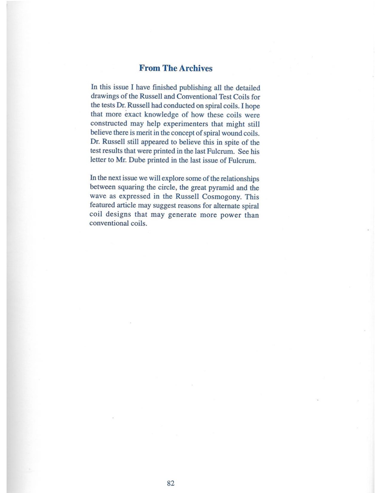
Editorial notes
- This intro confirms that the V5N1 section continues (and completes) the drawing set begun in Fulcrum V4N3. The previous issue (V4N3) printed the test results and Russell's post-test letter to Dube.
- The editor's phrase "the tests Dr. Russell had conducted on spiral coils" refers to the 1958 Alco Valve pull tests (see Fig. 4, journal p. 92).